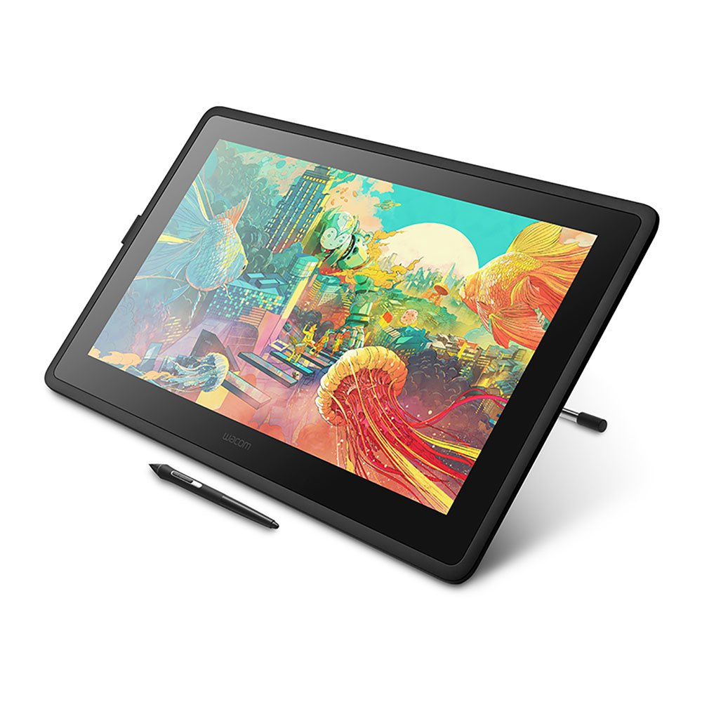

Il existe la Wacom Cintiq 22 qui dispose d'un écran de 22 pouces si vous avez besoin d'un plus large espace de travail. Cependant, les niveaux de pression et la qualité de l'image sont identiques. Le seul changement notable est le prix, passant de 550€ à 1000€.
Il existe également la GAOMON PD1560, qui dispose d'un écran aussi grand que la Wacom Cintiq 16, ainsi que le même nombre de niveaux de pression. Cependant, le calibrage est inferieur et la gestion de l'inclinaison du stylet n'existe pas sur cette tablette. Mais cette dernière se vend à 300€ contre plus de 500€ pour la Wacom Cintiq 16.

Nous pouvons enfin citer la XP-PEN ARTIST 13.3 PRO, qui est transportable vu qu'elle n'a pas besoin d'être branchée à une alimentation fixe. De plus, cette tablette est dotée d'un écran full HD laminé, et propose aussi 8192 niveaux de pression. Par contre, l'écran est plus petit que celui de la Wacom Cintiq 16 et nécessite 2 ports USB-A et un port HDMI.

Voici le lien du site de Wacom